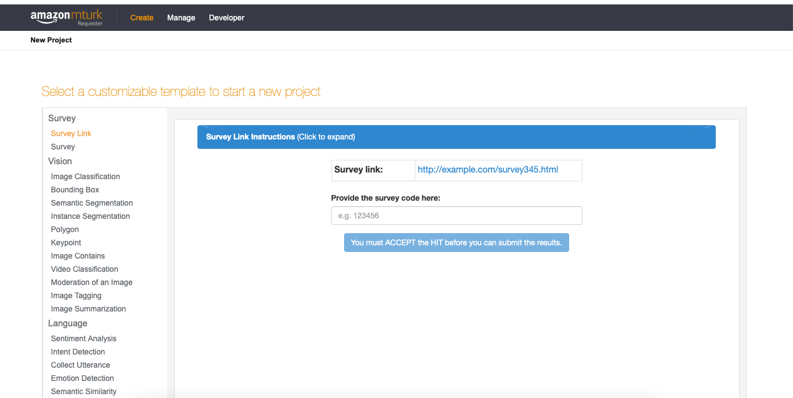
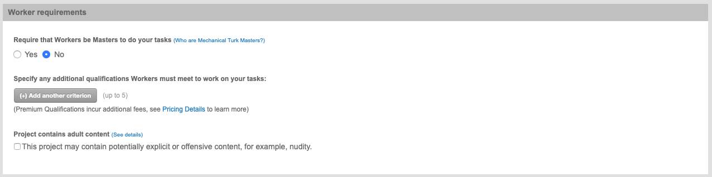
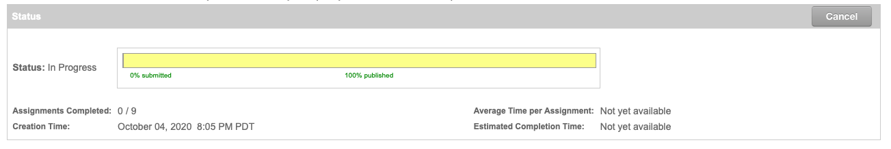

As a linguist, I often need to find speakers from a particular country or region to gather data on how they say something. However, it can sometimes be difficult to find a large group of speakers from a region you have never been to. In those cases, Amazon Mechanical Turk can come in handy. In this blog post, I explain how you can start using this awesome tool for your linguistic research! 💻
Amazon Mechanical Turk is actually used by individuals and companies for many different things. For our purposes here, it helps you distribute your linguistic survey to anonymous “workers” who will complete it in exchange for a small sum of money as compensation. These workers can be anywhere in the world 🌎, although you can set a restriction so that only workers from a specific area are allowed to complete the survey (more on this later!).
There are various things you can ask these workers to do for you, but in this blog post I will only talk about surveys, since that is what I usually use it for. More specifically, I will talk about those cases where you have your own survey hosted on a different platform (for example, a questionnaire on Qualtrics or a linguistic experiment on Ibex Farm) and you just need to find a bunch of people to complete it.
Ok, so the first thing you need to do is visit the Amazon Mechanical Turk website and create an account as a “requester” (this is Amazon’s terminology for the one who distributes the survey). If you already have an Amazon account, you can use it to sign in too without having to create a new one. Once you are logged in, click on “Create” and then on “New Project” (see screenshots below).
On the left side of the screen, you will see all the different options you can choose for your project. For this tutorial, I will choose the option “Survey Link”. To start working on the project, click on “Create Project” below. You will now be redirected to a screen where you can edit your project ✏️.

In this first section, you will choose a title, a description, how much you want to pay each worker, etc. If you want your workers to be from a particular country, you will have to specify that under “Worker requirements”. Click on “Add another criterion”, then choose “Location” and then a country. By doing this, your survey will only be shown to workers from that place. Also, when you get the responses, you will also be able to see the coordinates from where the workers completed the survey 🗺️.

This is what the workers will see! So write some clear instructions and don’t forget to add the link to your survey.
An important thing to note here: at the end of your survey (not the Amazon Mechanical Turk survey, but your own external survey), make sure to include a code for workers. Once they complete the survey, they will have to enter it here. This way, you can make sure they reached the end of the survey.
Not much to do here, just check everything is looking good! Click on “Finish” when you are done.
Now it’s time for you to publish your survey and get those responses! Click on “Publish batch” and fill out the payment section 💰.
You will have to pay in advance depending on how many responses you expect to have. If you expect too many responses but don’t get that many, the rest of the money will still be available in your account for future projects. Once your survey is published, you can simply relax and wait for your responses to come in.
To check the status of your survey (e.g., how many people have already completed it, how many days are left until the deadline…) you can click on the “Manage” tab. You will see a progress bar for each of the surveys. As responses come in, make sure you check the results. To do this, click on “Review results” next to the progress bar and see whether the workers who completed your survey entered the right code. If everything looks fine, you can approve their submissions so they can get paid.

If you have followed all the steps above, you are now done distributing your research survey using Amazon Mechanical Turk 🎉.
To check the actual responses of the survey, you will have to visit the external site you used when creating the survey.